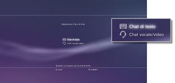
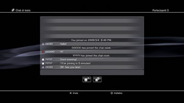

Amici > Chat di testo > Avvio o uscita da una chat di testo
Avvio o uscita da una chat di testo
Per utilizzare questa funzione, potrebbe essere necessario aggiornare il software del sistema.
È possibile utilizzare una chat di testo con le persone nell'elenco Amici.
Avvio di una chat di testo
1. |
Selezionare |
|---|---|
2. |
Selezionare |
|
 |
|
3. |
Inserire un nome per la chat room di testo, quindi selezionare [OK]. |
4. |
Selezionare gli amici che si desidera invitare nella chat, quindi selezionare [OK]. |
|
 |
 (Avvia nuova chat).
(Avvia nuova chat). (Chat di testo).
(Chat di testo).Note
- Per utilizzare la chat di testo, è necessario avere effettuato l'accesso al PSNSM.
- Per una chat di testo non viene inviato alcun messaggio di invito alla chat.
- Una chat room di testo può ospitare fino a 16 persone.
- Non è possibile utilizzare la funzione di chat di testo se sono configurate restrizioni all'utilizzo della chat. Per informazioni sulle impostazioni del filtro contenuti, vedere [Informazioni sul menu XMB™] > [Utilizzo delle impostazioni di filtro contenuti] in questa guida.
Accesso a una chat room di testo
Se si viene invitati a utilizzare una chat di testo, viene visualizzato un messaggio di notifica sull'angolo dello schermo in alto a destra. Selezionare  (Chat room (solo testo)) sotto
(Chat room (solo testo)) sotto  (Amici), quindi selezionare la chat room cui si desidera accedere.
(Amici), quindi selezionare la chat room cui si desidera accedere.
Note
- Se [Non visualizzare] è impostato su [Messaggi di notifica] sotto
 (Impostazioni) >
(Impostazioni) >  (Impostazioni del sistema), i messaggi di notifica non vengono visualizzati.
(Impostazioni del sistema), i messaggi di notifica non vengono visualizzati. - Per la maggior parte dei giochi, è possibile accedere a una chat di testo durante la partita. Premere il tasto PS sul controller wireless, quindi selezionare la chat room cui si desidera accedere sotto (Amici) > (Chat room (solo testo)). Per tornare alla schermata del gioco, premere il tasto PS.
- È possibile accedere fino a tre chat room contemporaneamente. Se si accede a una quarta chat room, si esce automaticamente dalla prima in cui si era entrati.
- In (Chat room (solo testo)) possono essere visualizzate fino a 20 chat room. Se sono disponibili più di 20 chat room, all'apertura delle nuove chat room quelle meno recenti vengono automaticamente eliminate.
Uscita da una chat room
Per chiudere la schermata della chat di testo, premere il tasto  . Selezionare la chat room da cui si desidera uscire, premere il tasto
. Selezionare la chat room da cui si desidera uscire, premere il tasto  , quindi selezionare [Abbandona] nel menu opzioni.
, quindi selezionare [Abbandona] nel menu opzioni.
Nota
Se si spegne il sistema PS3™ o ci si disconnette da PSNSM, l'uscita dalla chat room avviene in maniera automatica. Se si accede nuovamente a una chat room dopo averla lasciata, il registro degli accessi alla chat inviato in seguito all'uscita non viene visualizzato.
Eliminazione di una chat room
Selezionare la chat room che si desidera eliminare, premere il tasto , quindi selezionare [Elimina] nel menu opzioni.
Utilizzo del pannello di controllo
Utilizzando il pannello di controllo sulla schermata della chat di testo, è possibile eseguire le seguenti operazioni.
 |
Invita un amico | Consente di invitare un amico a entrare nella chat room di testo |
|---|---|---|
 |
Elenco dei partecipanti | Consente di visualizzare l'elenco delle persone che hanno effettuato l'accesso alla chat room |